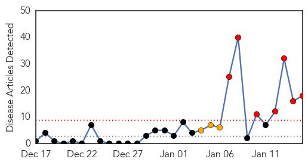

30 Day Trends
Web: 7 alerts, 3 warnings
Twitter: 0 alerts, 0 warnings
Top Articles:
- 0.994
- Latest measles case raises questions, and we have some answers
- 0.984
- Measles Cases Connected to Disney Theme Parks Mounting
- 0.960
- Fauci: Measles outbreaks not uncommon in U.S.
- 0.959
- 32 Confirmed Cases of Measles Linked to Disney Parks
- 0.945
- The California Measles Outbreak and the Least-Happy Debate on Earth
- 0.923
- Epidemic of measles in Belgrade officially confirmed
- 0.915
- US officials try to contain measles outbreak that started at Disneyland
- 0.902
- Sharp Health Care closed due to Measles Scare
- 0.873
- To Vaccinate Or Not Vaccinate « CBS Minnesota
- 0.871
- 13 more California measles cases tied to Disney outbreak
- 0.855
- 10 local confirmed cases of measles related to Disneyland outbre
- 0.837
- Disneyland measles outbreak largest in California in 15 years
- 0.799
- Urgent Care in La Mesa Open Following Measles Scare
- 0.758
- Measles infections soar, doctors urge vaccinations
- 0.732
- Adamawa IDPs’ Camps Record Outbreak Of Measles
- 0.674
- Exposure period for measles over, state health officials say
- 0.638
- San Diego now has 10 measles cases, nine of them unvaccinated children, officials say
- 0.604
- South Pasadena Woman Could Be Jailed For Refusing Measles Quarantine
Top Tweets:
-
No tweets found for Jan 15, 2015
Web/News Articles
Tweets

Article Locations

Article Confidences